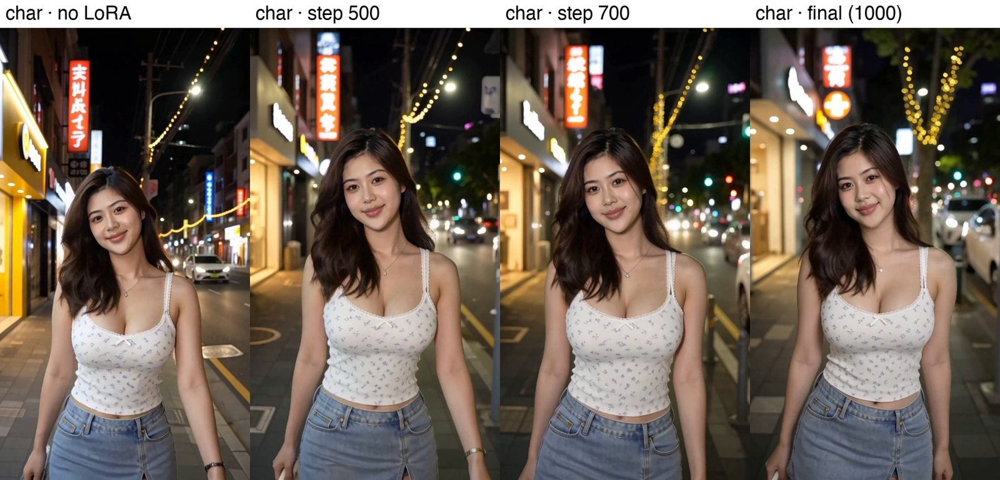
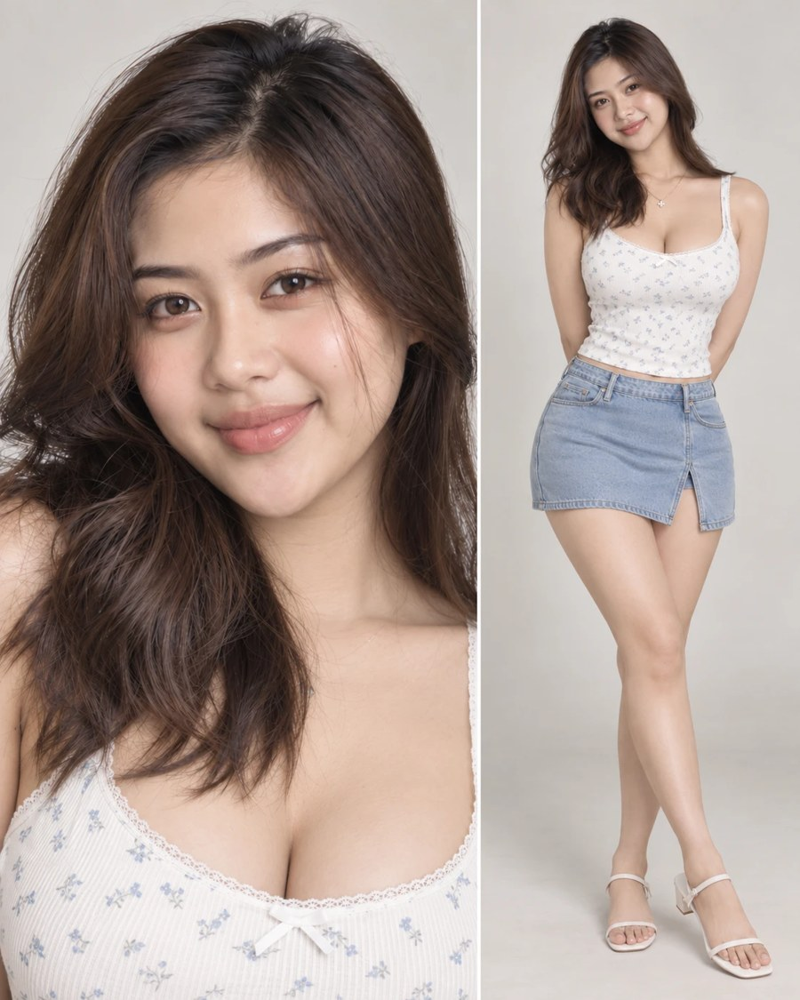

Teaching an AI Video Model My Favorite Lens
A MiniMax H3 LoRA that gives AI video the soft fall-off and night-time bokeh of a Voigtländer Nokton 35mm, trained from 40 old photos on a rented A100 in under ninety minutes.
nokton35bokeh LoRA.Some lenses you don't really choose; they end up choosing your photos. For me that's a Voigtländer Nokton 35mm shot wide open. It isn't clinically sharp. It glows a little, the background melts into soft round lights, and everything is warmer and gentler than it has any right to be. Ten years of night walks, cafés and family portraits all have the same look, and I can spot it in a thumbnail.
AI video doesn't have that look. MiniMax H3 is astonishingly capable, but its renders tend to be evenly lit, crisp front to back and a little too clean: the street behind your character stays as sharp as the character. So I tried to teach the model my lens.
Why a LoRA, and why Ref2V
Most of my H3 work runs through Ref2V (reference-to-video): I give the model a character sheet and a prompt, and it builds the scene around that person. So I didn't want a lens that only works from text. I wanted one that slots into the workflow I already use: any reference in, Nokton-looking shot out.
A LoRA is a small add-on (about 600 MB here) that nudges the model without retraining it. You can turn it on and off, stack it with a speed LoRA, and dial its strength.
The dataset: 40 photos and a trick
I started with about 75 photos taken with the lens over the years and kept the 40 that really show it: a clear in-focus subject with the background falling apart behind it. Out went the deep-focus street scenes (at f/1.4 a street focused at infinity looks like any other lens), the watermarked shots and the backs of heads. In went portraits at different distances, plus a few non-people subjects (a drink on a bar, a dog, a gingerbread house) so the LoRA learns the lens and not just faces.
Ref2V training needs pairs: a reference in and a target out. The target is easy, it's the photo itself. For the reference, I cut each subject out of its photo and placed it on plain grey, which is basically what my character sheets look like. Each training example then says:
Here is a person on a blank background. Render them in a real scene, the way the Nokton would.
Using the photo as its own reference would have taught the model only to copy. The look lives in the gap between a flat cutout and a full photograph, and that gap is what the LoRA learns.
Each photo got a caption in H3's official full-reference prompt format, describing only the content (who, where, what light) plus the trigger word nokton35bokeh. Nothing about blur or bokeh goes in the caption. The trigger word has to absorb that on its own.
Training on a Colab A100, from my terminal
My Google AI Pro plan comes with Colab compute units, and Google's new Colab CLI means an A100 can be driven straight from a terminal: provision it, upload, run, download, tear down. I used Musubi Tuner, which has experimental support for H3 and a single-image training mode.
| Base model | MiniMax H3 Ref2VA (full BF16, quantized to int8 on load) |
|---|---|
| Training adapter | ostris minimax_h3_ref2va_training_adapter_v1 |
| LoRA | rank 32, lr 1e-4, AdamW 8-bit, 1000 steps, checkpoint every 100 |
| Hardware | Colab A100 80 GB High-RAM, 39 GB used, ~5 s/step |
| Time / cost | 1 h 24 min of training, about 13 compute units for the whole session |
One thing that's easy to miss: H3's released checkpoints are CFG-distilled, so a naive LoRA pulls the model out of its distilled state and images fall apart within about 50 steps. The fix is a training adapter, a small LoRA merged in during training that "un-distills" the model. My LoRA trains on top of it, and at render time it runs on the normal model without the adapter.
Picking a checkpoint
I tested checkpoints in my own ComfyUI on a 3090, using my everyday 8-step setup: the same seed and prompt, only the LoRA changing. The effect builds steadily with training, and step 1000 (the final one) had the cleanest separation without breaking faces.


Eight kinds of light
A lens look is only interesting if it holds up in different light, so I ran the final LoRA through eight lighting setups, before and after, same seed.
Night street
Indoors, Christmas lights
Christmas market at night
Dusk, blue hour
Golden hour
Daylight park
Hard dappled shade
Café by the window
What it learned, and what it didn't
- Point lights at night are its sweet spot. String lights, lanterns, skylines and traffic lights turn into round, creamy bokeh, and the subject separates from the background the way a fast 35mm does.
- Color moves toward photo. It's warmer and more muted, with softer contrast and less of the clean digital sheen.
- Identity holds. Faces and wardrobe from the reference survive at every checkpoint.
- Daylight is subtler. In bright sun and hard shade the change is real but gentle. That's where most of my training photos were thin.
- It darkens a little. Night interiors and golden hour come out about a stop darker. Some of that is the lens; some of it I'd like to train out.
- Training subjects copy their pose. People from the training set come back in the exact pose of their reference. That's memorization from cutting references out of the same shot. New characters (like the one above) don't do this.
Round two: shooting real pairs
The cutout trick works, but it's indirect. The cleanest possible data is the change itself, so next I'm going out with a tripod to shoot pairs: the same frame at f/8 (sharp, flat, closer to a typical AI render) and wide open (the Nokton look), with the exposure matched. About two thirds people at different distances, the rest near subjects in front of busy backgrounds, and a good share in daylight to fix the weak spot. I'll also train in full precision this time.
Made with MiniMax H3 (Ref2VA), Musubi Tuner, Google Colab (A100) via the Colab CLI, ComfyUI on an RTX 3090, and Qwen Image 2.1 for background plates. Training photos are personal and not published here.